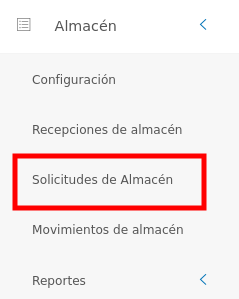
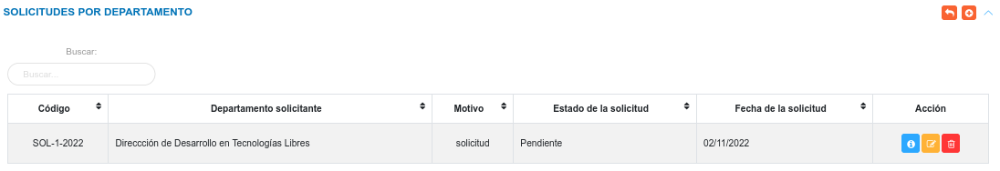
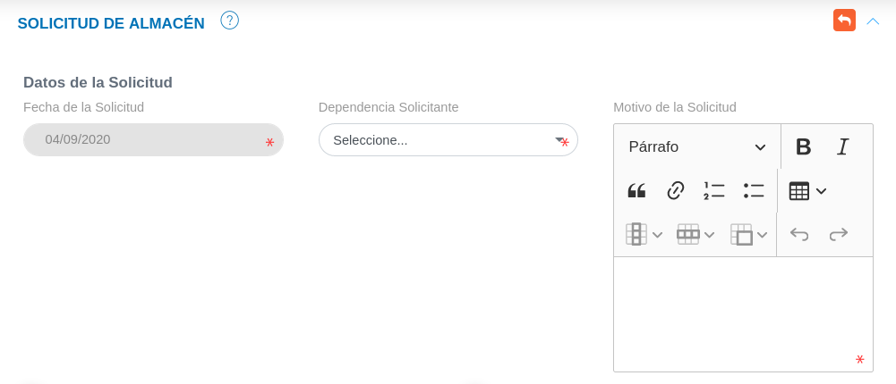
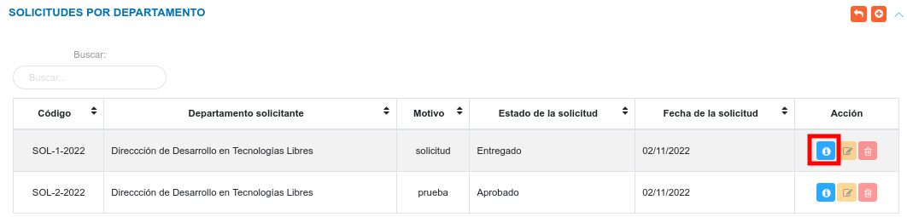
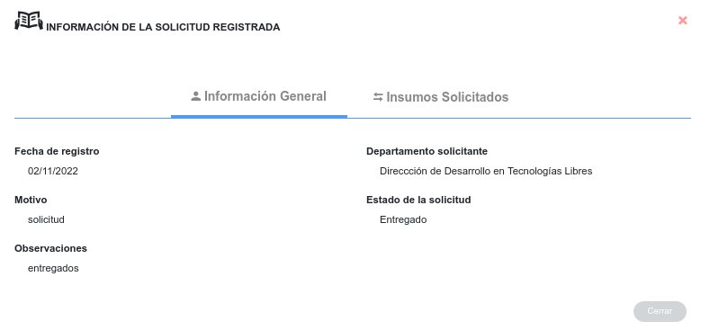
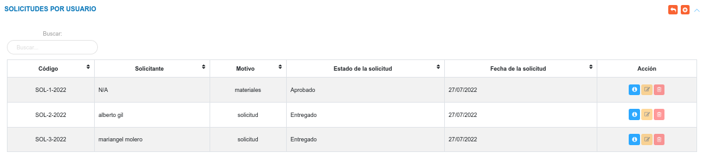
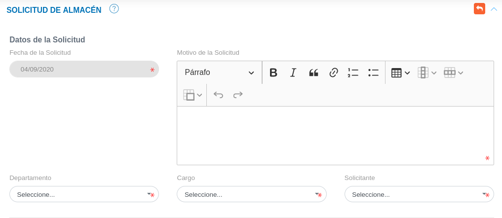
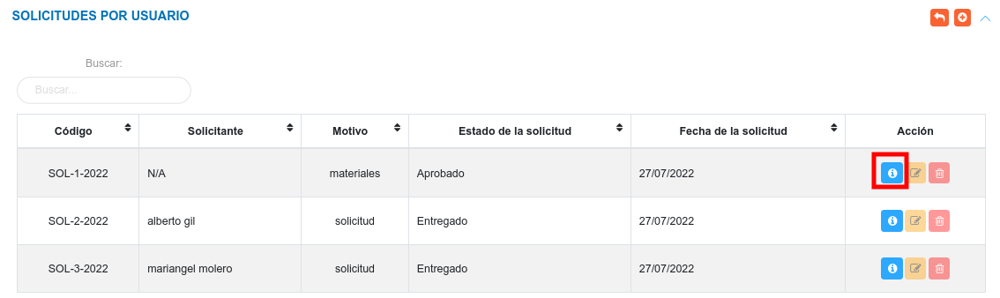
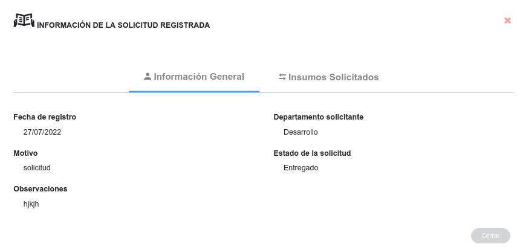
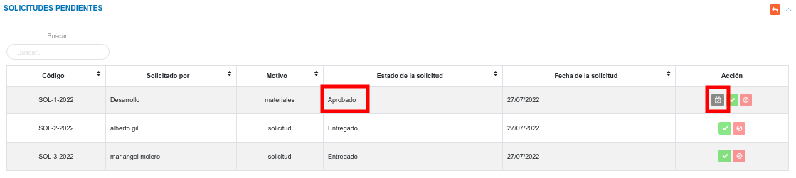

Gestión de Solicitudes de Almacén

Solicitudes de Almacén
Esta funcionalidad le permite al usuario realizar dos tipo de solicitudes: solicitudes por departamento y solicitudes por usuario. Para ingresar a esta sección, el usuario se debe diririgir al menú lateral, luego ubicarse en el módulo de almacén y pulsar la opción solicitudes de almacén.

Solicitudes por departamento
Una vez que el usuario pulse la opción Solicitudes de Almacén, el sistema muestra un panel cental con las secciones: Solicitudes por Departamento, Solicitudes por Usuario y Solicitudes Pendientes.
En la sección de Solicitudes por Departamento, el sistema muestra una tabla de registros que lista las solicitudes de artículos o materiales que un departamento o dependencia requiere, desde esta sección también es posible Crear una nueva solicitud, Ver, Editar y Eliminar un registro.

Crear una nueva solicitud por departamento
Esta funcionalidad permite registrar una nueva solicitud para productos o artículos que son requeridos por un departamento o dependencia.
Para crear una nueva solicitud
- Dirigirse al módulo de Almacén, luego a Solicitudes de Almacén y ubicarse en la sección Solicitudes por Departamento.
- Haciendo uso del botón Crear
 ubicado en la esquina superior derecha de esta sección, se procede a realizar una nueva solicitud.
ubicado en la esquina superior derecha de esta sección, se procede a realizar una nueva solicitud. - Se completa el formulario de registro de la sección Solicitud de Almacén.
- Se presiona el botón Guardar
 ubicado al final de esta sección, y se verifica en la lista de registros en Solicitudes por Departamento.
ubicado al final de esta sección, y se verifica en la lista de registros en Solicitudes por Departamento. - Se Presiona el botón Cancelar
 para cancelar registro y regresar a la ruta anterior.
para cancelar registro y regresar a la ruta anterior. - Se Presiona el botón Borrar
 para eliminar datos del formulario.
para eliminar datos del formulario. - Si desea recibir ayuda guiada presione el botón
 .
. - Para retornar a la ruta anterior presione el botón
 .
.

Sobre los datos de la solicitud
Dependencia solicitante
Nota
Los datos correspondientes al campo Dependencia Solicitante (departamento), deben estar registrados previamente, de no estar registrados es necesario adjuntar esta información en la Configuración General del Sistema KAVAC, específicamente en la opción "Unidades/Dependencias" de la sección de "Registros Comunes".
Proyecto y Acción Centralizada
Si la solicitud se encuentra relacionada directamente con un Proyecto cambie el botón de selección a la opción SI e ingrese un Proyecto y Acción Específica (asegurese de que exista al menos una Acción Específica asociada al Proyecto).

Si la solicitud se encuentra relacionada directamente con una Acción Centralizada cambie el botón de selección a la opción SI e ingrese una Acción Centralizada y Acción Específica (asegurese de que exista al menos una Acción Específica asociada a la Acción Centralizada).

Nota
Los datos correspondientes al campo Proyecto, Acción Específica y Acción Centralizada, deben estar registrados previamente, de no estar registrados es necesario adjuntar esta información en la Configuración del módulo de Presupuesto.
Seleccionar artículos a solicitar
Seleccione los artículos a solicitar usando el botón Checkbox ubicado en la primera columna de la tabla de artículos y a través del campo ubicado en la columna titulada Solicitados indique el número de artículos a solicitar.

Advertencia
El número de artículos a solicitar debe ser menor o igual al número de artículos en Existencia
Gestión de registros
Para Ver información detallada, Editar o Eliminar un registro se debe hacer uso de los botones ubicados en la columna titulada Acción de la tabla de registros en la sección de Solicitudes por Departamento.

Consultar registros
- Presione el botón Consultar registro
 para un registro de interés.
para un registro de interés.

- Seguidamente, el sistema muestra una interfaz con la información ingresada previamente del registro de la solicitud por departamento.

Editar registros
- Presione el botón Editar registro
 para un registro de interés.
para un registro de interés. - Luego, el sistema muestra el formulario en forma de edición.
- Modifique la información que requiera.
- Presione el botón Guardar
 para registrar los cambios efectuados.
para registrar los cambios efectuados.
Eliminar registros
- Presione el botón Eliminar
 para un registro de interés.
para un registro de interés. - Seguidamente, el sistema presenta un modal con un mensaje de confirmación de si está seguro de eliminar el registro de la solicitud por departamento, y muestra los botones Confirmar y Cancelar.
- Pulse el botón Confirmar si está seguro de eliminar el registro seleccionado.
- El sistema elimina el registro.
- Si pulsa el botón Cancelar, el sistema no ejecuta ninguna acción.
Solicitudes por usuario
Una vez que el usuario pulse la opción Solicitudes de Almacén, el sistema muestra un panel cental con las secciones: Solicitudes por Departamento, Solicitudes por Usuario y Solicitudes Pendientes.
En la sección Solicitudes por Usuario, el sistema lista las solicitudes de artículos o materiales que un usuario requiere, desde esta sección es posible Crear una nueva solicitud, Ver, Editar y Eliminar un registro.

Crear una nueva solicitud por usuario
Esta funcionalidad permite registrar una nueva solicitud de productos o artículos que son requeridos por un usuario.
Para crear una nueva solicitud
- Dirigirse al módulo de Almacén, luego a Solicitudes de Almacén y ubicarse en la sección Solicitudes por Usuario.
- Haciendo uso del botón Crear ubicado en la esquina superior derecha de esta sección, se procede a realizar una nueva solicitud.
- Se completa el formulario de registro de la sección Solicitud de Almacén.
- Se presiona el botón Guardar ubicado al final de la sección y se verifica en la lista de registros de la sección Solicitudes por Usuario.
- Se Presiona el botón Cancelar para cancelar registro y regresar a la ruta anterior.
- Se Presiona el botón Borrar para eliminar datos del formulario.
- Si desea recibir ayuda guiada presione el botón .
- Para retornar a la ruta anterior presione el botón .

Sobre los datos de la solicitud
Departamento
Nota
Los datos correspondientes al campo Departamento, deben estar registrados previamente, de no estar registrados es necesario adjuntar esta información en la Configuración General del Sistema KAVAC, específicamente en la opción "Unidades/Dependencias" de la sección de "Registros Comunes".
Cargo y Solicitante
Nota
Los usuarios solicitantes deben estar registrados previamente en el expediente del módulo de Talento Humano.
Seleccionar artículos a solicitar
Seleccione los artículos a solicitar usando el botón Checkbox ubicado en la primera columna de la tabla de artículos y a través del campo ubicado en la columna titulada Solicitados indique el número de artículos a solicitar.
Advertencia
El número de artículos a solicitar debe ser menor o igual al número de artículos en Existencia
Gestión de registros
Para Ver información detallada, Editar o Eliminar un registro se debe hacer uso de los botones ubicados en la columna titulada Acción de la tabla de registros en la sección de Solicitudes por Usuario.
Consultar registros
- Presione el botón Consultar registro para un registro de interés.

- Seguidamente, el sistema muestra una interfaz con la información ingresada previamente del registro de almacén.

Editar registros
- Presione el botón Editar registro para un registro de interés.
- Luego, el sistema muestra el formulario en forma de edición.
- Modifique la información que requiera.
- Presione el botón Guardar para registrar los cambios efectuados.
Eliminar registros
- Presione el botón Eliminar para un registro de interés.
- Seguidamente, el sistema presenta un modal con un mensaje de confirmación de si está seguro de eliminar el registro de la solicitud por usuario, y muestra los botones Confirmar y Cancelar.
- Pulse el botón Confirmar si está seguro de eliminar el registro seleccionado.
- El sistema elimina el registro.
- Si pulsa el botón Cancelar, el sistema no ejecuta ninguna acción.
Advertencia
El usuario encargo de la gestión de almacén debe ser cuidadoso a la hora de registrar y aprobar solicitudes, ya que debe tomar en consideración el número de existencia y el número de reserva que el insumo tiene asignado. Si se excede en el número de reservas generadas por solicitud de acuerdo a la existencia del insumo el sistema generará un mensaje indicando el error.

Consultar número de reserva y existencia del producto
Una vez se ingresa al formulario de Solicitud de Almacén para una solicitud por Departamento o por Usuario, cada Insumo indica información sobre su existencia y reserva en la columna titulada Inventario.

Solicitudes pendientes
Una vez que el usuario pulse la opción Solicitudes de Almacén, el sistema muestra un panel cental con las secciones: Solicitudes por Departamento, Solicitudes por Usuario y Solicitudes Pendientes.
En la sección solicitudes pendites, el sistema lista los registros de solicitudes por departamento o por usuario que el usuario realice, y esta toma el estado Pendiente, luego puede cambiar el estado como Rechazado, Aprobado o Entregado dependiendo de la acción que realice el analista de almacén.
Desde esta sección el analista del módulo de almacén o el usuario con permisos especiales, puede Aceptar o Rechazar solicitudes que se encuentran en el estado Pendiente.

Para Aceptar o Rechazar una solicitud se debe hacer uso de los botones ubicados en la columna titulada Acción de la tabla de registros en la sección Solicitudes Pendientes.

Aceptar solicitud
- Dirigirse al módulo de Almacén.
- Ingresar a Solicitudes de Almacén.
- Ubicarse en la sección Solicitudes Pendientes.
- Haciendo uso del botón Aceptar
 ubicado en la columna titulada Acción de la tabla de registros se aprueba la solicitud seleccionada.
ubicado en la columna titulada Acción de la tabla de registros se aprueba la solicitud seleccionada.
Rechazar solicitud
- Dirigirse al módulo de Almacén.
- Ingresar en Solicitudes de Almacén.
- Ubicarse en la sección Solicitudes Pendientes.
- Haciendo uso del botón Rechazar
 ubicado en la columna titulada Acción de la tabla de registros se rechaza la solicitud seleccionada
ubicado en la columna titulada Acción de la tabla de registros se rechaza la solicitud seleccionada
Entregar productos
Una vez la solicitud que el usuario apruebe una solicitud, y el artículo se encuentra disponible se habilita la opción Entregar Producto en la columna títulada Acción.

Para confirmar la Entrega de productos
- Dirigirse al módulo de Almacén.
- Ingresar a Solicitudes de Almacén.
- Ubicarse en la sección Solicitudes Pendientes.
- Presionar el botón Entregar
 ubicado en la columna titulada Acción de la tabla de solicitudes.
ubicado en la columna titulada Acción de la tabla de solicitudes. - Ingresar una observación y presionar el botón Guardar para confirmar entrega.

Luego que la entrega ha sido confirmada la solicitud cambia su estado a Entregado en la tabla de Solicitudes por Departamento o Solicitudes por Usuario según sea el caso.